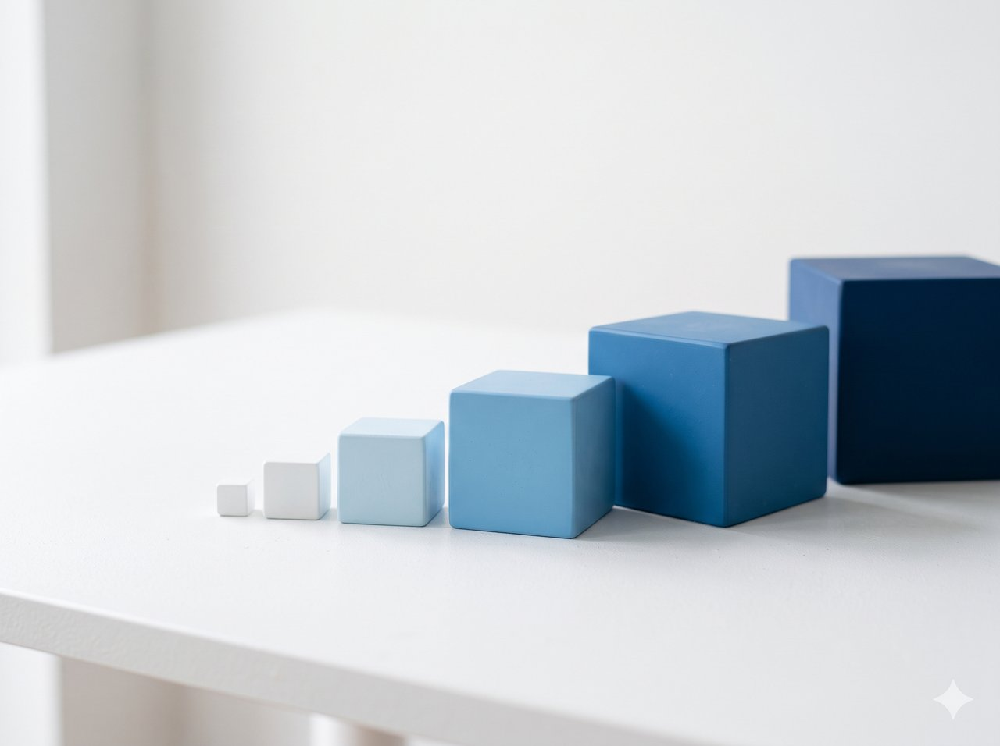
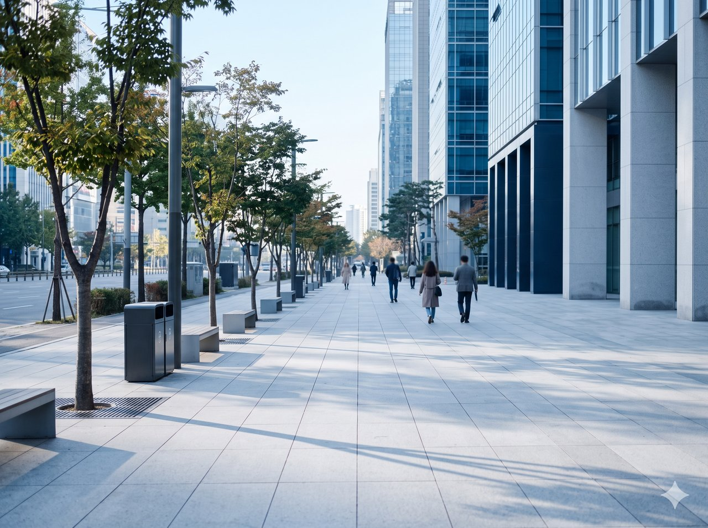
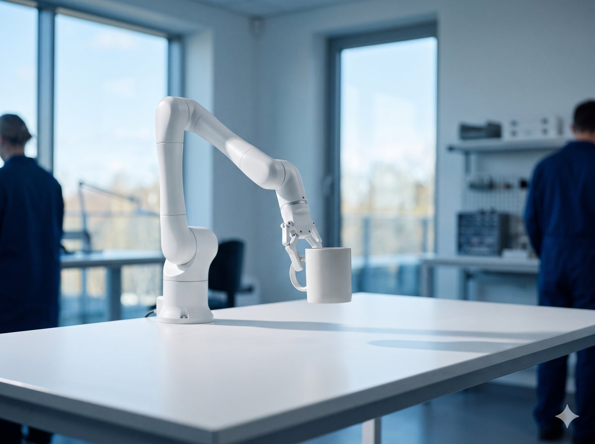
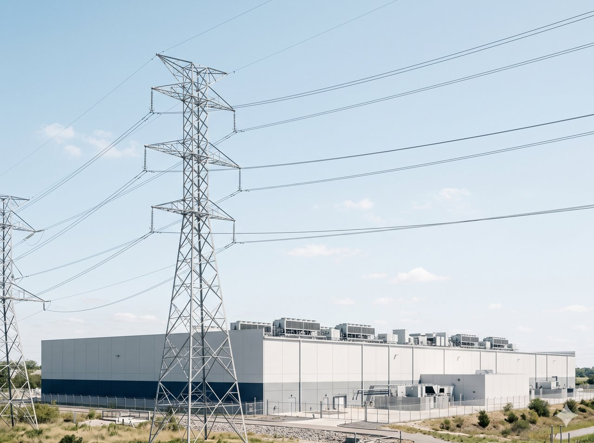
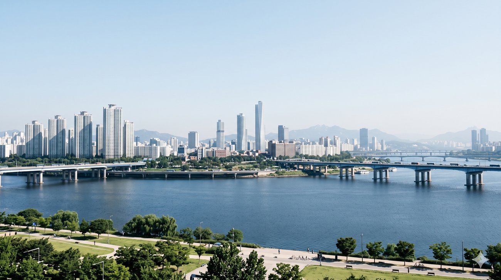

AI는 언제쯤
내 일을 대신하게 될까요
다음 모델 개발까지 돕기 시작한 뒤의 10년
맡을 수 있는 일이 얼마나 빨리 커지는지, 전문가들이 자동화 예상 시점을 어떻게 바꿨는지를 공개 데이터로 쟀어요. 그 관계들을 이어 2036년 한국 일자리를 추정했어요.
105일마다 두 배
AI가 맡을 수 있는 업무 크기 기술
2024년 이후 모델 기록으로 잰 값
약 320만 개
2036년 대체 압력 추정
그해 말까지 쌓인, AI·자동화로 사람이 빠질 수 있는 일자리 수(기준 시나리오 모형 값)
라벨 뜻: 기술(있는 그대로 적음)은 정확한 집계나 함께 움직임(원인 아님), 추정은 가정을 둔 계산, 직접은 원문 확인, 2차는 재인용이에요. 전체 풀이는 34장에 있어요.
질문과 결론
AI 회사들이 자사 모델의 도움으로 다음 모델을 만드는 사이
능력이 커지는 속도도 훨씬 빨라졌어요
AI가 맡을 수 있는 업무 크기가 두 배가 되는 데 걸린 기간(일)
짧을수록 업무 크기가 빨리 커진다는 뜻이에요.
시작 연도마다 발표 당시 최고 기록을 세운 모델들의 점에 가장 잘 맞는 직선을 찾는 회귀로 계산했어요.
계산 analysis/timeline_analysis.py · 2026. 10. 16. 확인 기술
용어
AI가 맡을 수 있는 업무 크기
AI가 절반 확률로 끝내는 과제를 사람이 하면 걸리는 시간으로 재요(METR 50% 시간지평). 앞으로는 이 크기를 ‘AI 능력’이라고도 불러요.
재귀적 자기개선
AI가 다음 모델 개발을 돕는 일을 말해요. 회사들이 밝힌 사례는 6장에서 봐요.
질문과 결론
세 가지를 차례로 확인해요
진로를 정하는 대학생과 신입부터 중간 관리자까지의 직장인을 위한 분석이에요.
-

1AI가 맡을 수 있는 업무는 얼마나 빨리 커지나요
업무 크기가 두 배가 되는 데 걸리는 기간의 변화를 재요.
6~9장 · AI 발전 속도
-
2전문가 예상도 함께 앞당겨졌나요
AI 능력이 두 배가 될 때마다 AGI와 모든 직업 자동화까지 남은 햇수가 몇 년씩 줄었는지 계산해요.
10~12장 · 전문가 예상
-

3실제 고용에도 나타났나요
미국 770개 직업과 국내 직군별 취업자, 한국은행의 청년·50대 일자리 수치로 변화를 확인하고 2036년까지 추정해요.
13~18장 · 23~29장 · 실제 고용 · 2036 추정
AGI는 기계가 모든 과제를 사람보다 낫고 싸게 해내는 때, 모든 직업 자동화는 어떤 직업이든 기계가 완전히 맡을 수 있게 되는 때예요(AI Impacts 전문가 설문의 정의). 회사마다 AGI를 다르게 정의해서, 기준이 다른 지표는 한 줄로 잇지 않았어요.
질문과 결론
결론은 세 숫자예요
1AI가 맡을 수 있는 업무는 얼마나 빨리 커지나요
105일
2024년 이후 업무 크기가 두 배가 되는 데 걸린 기간이에요. 2019년 이후 전체로 보면 188일이에요.
기술7~8장
2전문가 예상도 함께 앞당겨졌나요
3.5배*
AI 능력이 두 배가 될 때마다 남은 햇수가 AGI까지는 3.2년, 모든 직업 자동화까지는 11.2년 줄어 3.5배 차이예요.
기술n = 310~11장
3실제 고용에도 나타났나요
94%
2022년부터 2026년까지 사라진 한국 청년 일자리 28.5만 개 가운데 AI 노출이 큰 업종에서 나온 비중이에요.
기술18장
* 3.5배는 2022·2023년 설문의 옛 집계와 2024년 설문의 2026년 보고서 값을 섞어 계산했어요.
2036년 대체 압력은 AI·자동화로 대체될 가능성이 70% 이상인 ‘고위험’ 일자리에 ‘실제로 사람이 빠지는 비율’ 0.5를 곱한 최대치 가운데, 시나리오마다 다른 속도로 그해 말까지 쌓인 몫이에요. 새로 생기는 자리는 넣지 않은 이 발표의 모형 값이에요.
AI 능력이 커지는 속도와 회사 도입에 걸리는 기간으로 계산하면 기준 시나리오에서 2036년 말까지 한국 일자리 약 320만 개(2025년 취업자의 11.1%)만큼 대체 압력이 쌓여요. 추정
질문과 결론
따로 보이는 숫자들이 연산·전력에서 일자리까지 이어져요
컴퓨터 속 AI와 로봇도 한 흐름으로 봐요. 관계식은 한 자료가 바뀔 때 다른 쪽이 얼마나 함께 움직이는지 숫자로 적은 것이고, 연결선에 단 R1부터 R6까지를 뒤 장에서 하나씩 재요.
같은 AI 능력이 로봇 학습 데이터가 쌓이는 만큼 늦게 몸을 쓰는 일로 넘어간다고 봐요. 추정
AI 발전 속도
AI 회사들은 이미
자사 모델로 다음 모델을 만들고 있어요
회사가 밝힌 AI 작성 코드 비율(%)
Google은 새 코드, Anthropic은 사내 코드 기준이라 정의가 달라요. 가로 간격은 시간과 무관해요.
보도로 옮긴 값 · Anthropic은 최고재무책임자(CFO) 발언 2차자체 보고
연구·연산 사례
OpenAI는 ‘자동화 연구 인턴’ 목표를 이뤘다고 발표했어요
2025년 10월에 2026년 9월까지 인턴, 2028년 3월까지 연구자를 만들겠다고 했고, 2026년 9월 첫 단계를 자체 측정으로 달성했다고 밝혔어요. 4시간부터 8시간까지 걸리는 과제에서는 성공한 사례의 절반 넘게 사람이 개입했어요. 2차
AlphaEvolve가 Google 연산 자원 0.7%를 되찾았어요
Gemini 핵심 계산을 23% 빠르게 하고 학습 시간을 1% 줄였어요(2025년 5월). 직접
AI 발전 속도
AI가 맡을 수 있는 업무는 갈수록 빠르게 커져요
AI가 맡을 수 있는 업무 크기 2022~2026년 (사람이 하면 걸리는 분)
세로축은 AI가 절반 확률로 끝내는 과제를 사람이 하면 걸리는 시간이에요(METR 50% 시간지평). 한 칸마다 10배인 로그 눈금이고, 가로축은 실제 발표일 간격이에요. 점은 발표 당시 최고 기록을 세운 모델 16개이고, 2024년 이후 104.7일은 그중 12개로 구했어요. 맨 오른쪽 17.4시간은 METR가 아직 믿기 어렵다고 밝힌 16시간을 넘어서 두 배가 되는 기간 계산에서 뺐어요.
METR Time Horizon 1.1 원본 YAML(2026년 5월 갱신) · 2026. 10. 16. 확인 기술
AI 발전 속도
AI가 맡을 수 있는 업무 크기는 이제 105일마다 두 배가 돼요
업무 크기가 두 배로 느는 데 걸린 기간
최근 점만 쓰면 더 짧게 나와요. 시작 연도별로 최고 기록 점 17·14·12개를 썼고, 2019년 이후 값에는 7장 차트 밖의 2019·2020년 점 2개도 들어가요. 16시간이 넘는 17.4시간은 뺐어요.
METR 원자료(Time Horizon 1.1)로 계산 · 2026. 10. 16. 확인 기술
블록 크기는 실제 값과 관계없어요.
검산과 예측
검산
원자료로 회귀(점들에 가장 잘 맞는 직선 찾기)를 직접 계산해 보니 METR가 낸 188일과 129일이 그대로 나왔어요.
예측
2024년까지의 점만으로 2025년부터 2026년까지의 최고 기록을 맞혀 보니, 속도가 일정하다고 본 모형은 실제 업무 크기의 약 5분의 1로 잡았어요. 점점 빨라진다고 본 쪽이 가장 가까웠어요. 시간순 검증
AI 발전 속도
AI 회사 대표들이 말하는 시점은 2026년부터 2030년 무렵까지예요
가리키는 대상과 AGI 정의가 저마다 다르고, ‘목표’와 ‘예측’도 섞여 있어요.
-

‘강력한 AI’는 빠르면 2026년 말이나 2027년
Anthropic · 다리오 아모데이
2025년 3월 미 정부 제출 문서 예측
-

AI 연구를 스스로 해내는 시스템은 2028년 3월
OpenAI · 샘 올트먼
2025. 10. 28. 라이브 내부 목표 2차
시각은 ceointerviews.ai가 건 링크를 따랐고, 직접 보지는 않았어요.
-

AGI는 2030년 앞뒤 1년
Google DeepMind · 데미스 허사비스
2026년 6월 행사 발언 예측 2차
전문가 예상
AI 능력이 두 배로 늘 때마다
전문가들이 내다본 AGI까지 남은 햇수는 3.2년씩 줄었어요
AGI 예상 연도 (전문가 설문 2016~2024년 · Metaculus)
반대로 움직인 자료도 있어요. 예측 커뮤니티 Metaculus는 2025년 이후 모델 능력이 더 올랐는데도 중앙값을 2030년에서 2033년으로 늦췄어요. 두 계열은 AGI 정의가 달라 선으로 잇지 않았어요.
오른쪽 관계식은 설문 3회의 시점을 2022년 7월 15일, 2023년 10월 20일, 2024년 12월 15일로 가정했어요. 2022년 설문은 처음 발표된 2059년을 썼고, 2026년 보고서는 이 값을 2060년으로 다시 집계했어요.
AI Impacts 전문가 설문 n = 4회(직접) · Metaculus 질문 5121 커뮤니티 중앙값 9개 시점(2차 인용) · 2026. 10. 16. 확인 기술
AI 능력과 남은 햇수의 관계식
남은 햇수 ≈ 32.5 − 3.2 × (능력이 두 배가 된 횟수)
남은 햇수는 AGI 예상 연도에서 설문 시점을 뺀 값이고, 두 배가 된 횟수는 업무 크기 1분을 0회로 놓고 셌어요.
상관계수(−1~1, 함께 움직이는 정도) r = −0.97
기술n = 3
전문가 예상
전문가들이 예상한 모든 직업 자동화까지 남은 햇수는
AGI 쪽보다 3.5배 빠르게 줄었어요
AI 능력이 두 배가 될 때마다 줄어든 남은 햇수
3.2년 AGI
11.2년 모든 직업 자동화
11.2 ÷ 3.2 = 3.5배*
상관계수 r = −0.97(AGI), −0.95(모든 직업 자동화)
기술n = 3
같은 설문의 두 예상 연도 차이(모든 직업 자동화 − AGI)
105년 → 56년*
* 3.5배와 105년 → 56년은 2022·2023년 설문의 첫 발표치와 2026년 보고서에 실린 2024년 설문 값으로 계산했어요. 그 보고서는 앞 두 설문도 다시 집계했어요.
AGI와 모든 직업 자동화 예상 연도 (2016~2024년 설문)
설문은 기계가 모든 과제를 사람보다 낫고 싸게 해내는 때(AGI)와 어떤 직업이든 완전히 맡을 수 있게 되는 때(모든 직업 자동화)를 따로 물었어요. 2016년 설문은 둘째 값이 수집한 자료에 없어 그리지 않았어요.
AI Impacts 전문가 설문(Expert Survey on Progress in AI) n = 4회 · 2026. 10. 16. 확인 기술
전문가 예상
컨설팅 기관의 추정도 같은 방향으로 움직였어요
지금 하는 일의 절반이 자동화되는 해
McKinsey · 세계 업무활동 기준
2045년
2017년 보고서는 2055년(앞뒤 약 20년)이었는데 2023년 판에서 10년 앞당겨졌어요. 새 추정의 범위는 2030년부터 2060년까지예요.
직접
2023년 보고서가 인용한 직전 모델 값 2053년과 견주면 8년 빨라졌어요.
2030년까지 자동화될 수 있는 근로시간 비중
McKinsey · 미국 기준
29.5%
생성형 AI를 반영하기 전 추정은 21.5%였어요(2023년 7월).
직접
실제 고용
그런데 직업 전체로 보면 AI 노출도와 고용 변화는 아직 거의 상관이 보이지 않아요
점 하나가 직업 하나 · 세로축은 2022→2025 변화율 (%)
β(Eloundou 외) = LLM(대규모 언어 모델)만으로 시간을 절반 이상 줄일 업무 비중 + 도구를 더해야 그렇게 되는 쪽의 절반. 점 크기는 2022년 고용이에요(큰 것만 구별).
n = 639 직업(2022년 고용 1만 명 이상) · BLS OEWS 2022·2025 · 2026. 10. 16. 확인 기술
고용 하한 없는 직업 770개(수업 4·5주)의 변화율은 평균 3.43%, 중앙값 3.35%, 표준편차 18.71(n−1로 나눈 표본 값), 왜도 1.91이에요. 이상치 후보(z 점수로 10개, IQR로 30개)는 지우지 않고 민감도로만 썼어요.
Spearman 순위 상관 · 직업 639개
−0.017
부트스트랩(표본을 다시 뽑아 보는 방법) 95% 구간이 −0.10부터 0.065까지라 0과 구별되지 않아요.
Microsoft·Anthropic의 지표로 바꿔도직업 651개 · 628개, 순위 상관 ρ의 절댓값
0.05 이하
IQR(사분위 범위) 기준 이상치 후보 30개를 빼도고용 하한 없는 770개 중 남은 740개
0.033
실제 고용
다만 노출이 가장 큰 직업들은 이미 덜 늘고 있어요
AI 노출도를 5등분한 분위별 합계 고용 변화율 2022→2025 (%)
n = 770 직업 전체(고용 하한 없음) · 분위마다 154개 · BLS OEWS 2022·2025 · 2026. 10. 16. 확인 기술
노출 상위 10% 직업 77개
+0.3%
나머지 90%
+5.5%
상위 10% 직업 가운데 62%가 고용이 줄었고, 나머지 90%에서는 그 비율이 37%예요.
노출 상위 15개 중 고용이 19% 넘게 줄어든 직업
β가 큰 순(2022년 고용 5만 명 이상만) · 변화율 2022→2025
BLS는 OEWS가 시계열 비교용으로 설계된 조사가 아니라고 안내해요.
직업 하나하나의 고용 변화는 표본오차가 커서, 몇 곳의 큰 감소만으로 AI 때문이라고 단정하지 않아요.
실제 고용
직업군을 섞어 보면 관계가 가려졌을 수 있어요
직업이 15개 이상인 대분류 18개 중 음의 상관이 나온 곳
11개
그중 부트스트랩 95% 구간 전체가 0보다 작은 대분류는 의료 지원, 사무·행정 지원 2곳뿐이에요. 예술·미디어는 위 끝이 0에 닿아 뺐어요.
대분류별 평균 차이를 빼고 다시 재면
r = −0.078
직업 770개 · 95% 구간 −0.16~0.004
그럴 수 있는 이유
노출이 큰 편인 대분류의 성장
경영·재무(평균 β 0.525, +9.1%)와 관리직(β 0.467, +13.3%)이 경기·구성 요인으로 함께 늘면서 대분류 안의 음의 관계를 덮었을지 몰라요.
둘 다에 영향을 줬을 수 있는 원인(교란 후보)
금리 인상 뒤 테크 채용 조정, 원격근무 확산, 직업 안 연령 구성, 해외 이전과 업무 재분류. 그래서 결론은 ‘함께 움직인다’(기술)까지만 써요.
대분류 안에서 잰 AI 노출도와 고용 변화율의 순위 상관(ρ)
전체로는 0에 가깝지만 사무·행정은 ρ = −0.29, 컴퓨터·수학은 −0.35예요. 막대마다 대분류 하나, 이름 옆 숫자는 직업 수예요. 15개 미만인 사회복지, 법률, 건물 관리, 농림어업은 뺐어요.
미국 직업 대분류 18개 · 2022→2025 · BLS OEWS · Eloundou 외 β 기술
실제 고용
머신러닝으로 예측해도
AI 노출도를 넣어 늘어난 설명력은 약 0.01뿐이에요
모형별 교차검증 R²
2023→2025 고용 변화, 직업 743개
기준선은 특징을 쓰지 않아 두 칸이 같아요. * 부스팅은 학습 R²가 0.501로 교차검증 값보다 훨씬 커서 과적합 신호예요.
교차검증 R² 증가분
약 0.01
릿지에서 0.010 늘었고 부스팅은 오히려 줄었어요. 상관 분석과 같은 결론이에요. 기술
특징별 순열 중요도
하나씩 섞었을 때 줄어든 R²예요.
전체 데이터로 학습한 부스팅에서 잰 표본 안 값이에요.
직업 743개 · BLS OEWS · 노출도 3종(Eloundou 외 β, Microsoft, Anthropic) 기술
실제 고용
한국도 사무직·전문직 취업자는 아직 늘고 있어요
직업군별 추이 2019~2025년 (2019년 기준 = 100)
세로축은 변화를 견주려고 80부터 그렸어요. 대분류 9개 중 3개만 보여요(9개 합 = 전체로 검산).
KOSIS 직업별 취업자(DT_1DA7E08S_NEW) 연평균 · 2026. 10. 16. 확인 기술
2019→2025 변화율
전문직
+19.7%
사무직
+8.7%
판매직
−17.6%
한국고용정보원 노출도(AI·로봇·소프트웨어)로는 낮은 직군이에요. 이 기관은 감소 까닭을 온라인 상거래 등 구조 변화로 봐요. 2036 추정 모형에 넣은 판매 고위험 비중 62.6%는 대체 가능성이 70% 이상인 일자리 몫이라 노출도와는 다른 지표예요.
한국고용정보원은 노출도와 취업자 증감의 상관이 매우 약하거나 없다고 보고, 국회예산정책처도 일관된 영향을 찾지 못했어요(잠정).
취업자 수는 오히려 늘어 총량에서는 AI의 영향이 드러나지 않으니, 변화는 새로 들어오는 신입에서 찾아야 해요.
실제 고용
전체 일자리 수보다 신입 채용에서 변화가 더 뚜렷해요
한국 청년(15~29세) 일자리 감소 · 2022년 6월→2026년 6월
28.5만 개
94%가 AI 노출이 큰 업종에서 줄었고, 같은 기간 50대는 23.0만 개 늘었어요.
연령대별 일자리 변화 (만 개)
한국은행 이슈노트 2026-19 기술
미국 22~25세 · 2026년 6월
19%
AI 노출이 큰 직업의 고용이 덜 노출된 쪽 또래 추세보다 낮은 정도예요. 경력자는 차이가 없어요. 기술
한국 공인회계사 · 2022→2025(10월 기준)
91→28%
합격자 가운데 수습 회계사로 등록한 비율이고, 2025년은 마감 전 값이에요. 기술
관계식 R4 읽는 법
두 시점 사이 고용 변화를 그사이 AI 능력이 두 배가 된 횟수로 나눈 값이라 원인을 뜻하지 않아요. 근거는 미국 점 2개와 한국 기간 1개예요.
* 횟수에는 7·8장에서 뺀 17.4시간 점도 들어 있어요. 이 점을 제외하면 약 1.5%p, 약 2.6만 개예요.
AI 능력이 두 배가 될 때마다* 미국 22~25세 고용 격차(19%)는 2025년 7월부터 2026년 6월까지 약 1.3%p(퍼센트포인트)씩 커졌고, 한국 노출 업종 청년 일자리는 2022년 6월부터 2026년 6월까지 약 2.5만 개씩 줄었어요. 기술
속도를 바꾸는 요인
로봇 학습 데이터가 쌓이면 같은 AI가 몸을 쓰는 일도 맡을 수 있게 된다고 봐요
2.5개월
로봇 학습 데이터가 두 배로 느는 데 걸린 기간. Physical Intelligence 1만 시간(2024년 10월) → Generalist AI 27만 시간(2025년 11월). 서로 다른 두 회사의 발표를 이은 참고치예요. 추정
6.6개월
Waymo 무인 택시의 주간 유료 운행이 두 배가 되기까지. 5만 건(2024년 5월) → 50만 건(2026년 3월). 추정
인터넷 영상과 로봇 학습 데이터의 양
한 칸이 약 30만 시간이고, 인터넷 영상은 그 3,333배예요.
Bessemer · VC(벤처캐피털) 추정 추정
세계 총량 약 30만 시간(Bessemer 추정)과 회사 발표 값(Generalist AI 27만 시간 등)은 세는 기준이 달라 서로 더할 수 없어요.

속도를 바꾸는 요인
모형에서는 몸을 쓰는 일이 3년부터 8년까지 늦게 따라와요
따라잡는 햇수(= 로봇 데이터 시차) = 격차를 메우려면 두 배로 늘어야 하는 횟수 11.7번 × 한 번 두 배가 되는 데 걸리는 기간
11.7번은 인터넷 영상과 로봇 학습 데이터의 차이 약 3,333배(19장)에서 나온 값이에요(2의 11.7제곱 ≈ 3,333).
로봇 학습 데이터가 인터넷 영상만큼 쌓이는 데 걸리는 햇수
3·5·8개월마다 두 배가 되면 2.9·4.9·7.8년이 걸려요. 모형의 빠름·기준·신중 시나리오에는 이를 3·5·8년으로 올려 썼어요.
Bessemer · analysis/relations.py 추정
19장 관측(2.5개월마다 두 배, 회사 주장)은 빠름 시나리오(3개월)보다도 짧아요. 로봇 연구자 Levine이 2025년 9월에 내다본 자율화 시점(약 5년 뒤)은 다른 지표지만 기준 시나리오(4.9년)와 가까워요.
데이터를 쌓는 곳과 로봇 현황
오픈그래프랩스
서울, 촉각 글러브·영상 수집, NVIDIA Inception
Scale AI
10만 시간 이상 회사 주장
Generalist AI
주 1만 시간씩 증가 회사 주장
한국
제조업 근로자 1만 명당 산업용 로봇 1,220대로 세계 1위(미국 307대)
속도를 바꾸는 요인
속도를 늦출 제약 가운데 가장 먼저 걸릴 것은 전력이에요

연 1.15배
데이터센터 전체 전력
IEA 415TWh(테라와트시, 2024) → 945TWh(2030), 해마다 14.7%씩 늘어요. Epoch AI도 2030년 무렵의 첫 병목으로 전력을 꼽았어요.
연 2.9배
가장 큰 AI 모델 학습에 드는 전력
학습 연산 증가 연 4.1배를 칩 효율 개선 연 1.41배로 나눈 값이에요. Epoch AI 전망(연 2.2배에서 2.9배)의 윗값과 같아요. 추정
모형의 신중 시나리오에서는 이 제약 때문에 2028년부터 AI 능력이 두 배가 되는 기간이 1년으로 늘어요.
속도를 바꾸는 요인
뇌세포 칩이 2036년 안에 AI 전력 문제를 풀 근거는 찾지 못했어요
뇌세포 칩 CL1
뉴런
약 80만 개
가격(대당)
35,000달러(USD)
수명
최대 6개월
전력(대당)
약 25W 회사 주장
전력은 독립 측정이 없어요. 이런 칩이 지금까지 해낸 일은 퐁 게임(DishBrain)과 화자 구별(Brainoware) 정도예요.
뇌와 슈퍼컴퓨터의 전력
하는 일이 달라 직접 비교는 아니에요.
뉴로모픽(뇌 신경망을 본뜬 칩)
TOPS/W는 와트당 연산 성능이에요. Hala Point 수치는 특정 조건에서 잰 것이고, 뉴로모픽은 데이터센터 학습보다는 기기 안 추론에 쓰일 전망이에요.
같은 과제로 GPU와 와트당 성능을 견준 결과는 아직 공개된 것이 없어요.
2036 추정
관계식들을 이어 직업군별 대체 시점 모형을 만들었어요
AI 능력이 같아도 몸을 많이 쓸수록 대체가 늦게 본격화된다고 봐요. 최종 규모는 한국고용정보원의 고위험 비중을 따르고, 계산으로 정하는 것은 시기뿐이에요.
시나리오별 가정
사무직·기준 시나리오
회사 도입 기간의 근거
본격화 시점은 대체 압력이 최대치의 절반에 이르는 해예요. 연도의 소수점은 그 연도 안에서 지난 몫이에요(2027.6년 = 2027년이 60% 지난 때). 모형은 대리·주임 능력 문턱을 0.1년 단위로 반올림해 넣었어요. 그래서 결과의 끝자리가 조금 달라질 수 있어요.
규모
교육용 모형이라 새로 생기는 일자리와 인구 감소는 넣지 않았어요.
2036 추정
모형에서는 2031년 전에 AI가 한 달짜리 업무도 80% 확률로 해내요
한 주짜리에 닿는 해는 세 시나리오가 약 1년 차이지만, 회사 도입 기간은 2.6년부터 6년까지예요.
80% 확률로 끝내는 업무 크기 2026~2036년 (사람 기준 시간·로그 눈금)
두 배가 되는 기간은 50% 확률 기준에서 구한 값을 그대로 썼어요(가정). 실제 업무가 METR 과제보다 10배 복잡하다면 도달 시점이 약 1년부터 3년 남짓까지 늦어져요. 연도의 소수점은 그 연도 안에서 지난 몫이에요(2028.4년 = 2028년이 40% 지난 때).
출발점은 Claude Mythos(초기판)의 80% 기준 185.9분(2026. 4. 7., METR 실측)이고, 7장의 17.4시간은 50% 기준이에요. 가는 점선은 직급별로 가정한 업무 크기(하루 8시간, 한 주 40시간, 한 달 170시간, 한 분기 500시간)예요.
시나리오 3개 · METR Time Horizon 1.1 · analysis/projection_2036.py · 2026. 10. 16. 확인 추정
남은 변수는 회사가 실제로 업무를 바꾸는 속도와, 로봇 학습 데이터가 얼마나 빨리 쌓이느냐예요.
2036 추정
직급별 대체는 대리·주임 2031년, 과장·차장 2032년, 부장·임원 2033년 무렵 본격화해요
굵은 숫자는 본격화 시점, 곧 대체 압력이 최대치의 절반에 이르는 해예요. 보통 숫자(AI가 그 직급의 업무를 80% 확률로 해내는 연도)에 회사 도입에 걸리는 기간(빠름 2.6년, 기준 4년, 신중 6년)을 더했어요. 연도의 소수점 아래는 버렸고, 별표(*)는 2036년 이후예요. 추정
직급별 업무 크기(하루·한 주·한 달·한 분기)는 이 발표의 가정이고, 두 배가 되는 기간은 7장의 50% 기준 값을 80% 기준에도 그대로 썼어요(가정).
신입 채용 감소는 모형보다 먼저
계산상 신입·인턴은 2030년(기준)에 본격화하지만, 청년 신규채용은 생성형 AI가 널리 쓰이기 전인 2022년 하반기부터 이미 줄었어요(한국은행, 국회예산정책처). 기술
2036 추정
기준 시나리오에서는 2036년까지 한국 일자리의 11.1%만큼 대체 압력이 쌓여요
2036년 누적
기준 시나리오
320만 개
취업자의 11.1% 추정
빠름
378만 개(13.1%)
신중
165만 개(5.7%)
기준 · 민감도실제로 사람이 빠지는 비율을 0.5 대신 0.3~0.7로 두면
192만~448만 개
실업보다 채용 감소로
한국개발연구원(KDI)이 인용한 통계로는 생산연령인구가 해마다 평균 약 39만 명 줄어요. 2차 그래서 일자리를 잃기보다 ‘채용이 늘지 않는’ 모습으로 나타날 수 있어요.
대체 압력 누적 2026~2036년 (만 개)
점선은 KDI가 AI 단독·경제성 기준으로 낸 2025년과 2035년 연간 대체 값 사이를 이 발표가 해마다 같은 비율로 메워(지수 보간) 누적한 선이고, 2036년은 2035년 수준을 한 해 더 이었어요.
대체 압력은 ‘고위험’ 일자리(한국고용정보원, AI·자동화로 대체될 가능성 70% 이상)에 실제로 사람이 빠지는 비율 0.5를 곱한 최대치 가운데 그해 말까지 쌓인 몫이에요. 취업자 1명을 일자리 1개로 셌어요.
시나리오 3개 · KOSIS 2025 취업자 2876.9만 명 · 2026. 10. 16. 확인 추정
2036 추정
사무직이 먼저이고, 판매직과 장치·기계 조작직이 뒤따라요
직업군별 대체 압력이 시작되는 해 2026~2036년
파란 점은 기준 시나리오, 회색 선은 빠름부터 신중까지의 범위예요. 선이 오른쪽 끝에 닿으면 신중은 2036년 이후예요.
직업군 이름 옆 φ는 몸을 쓰는 정도(0부터 1까지)이고, 클수록 늦게 시작해요(이 발표의 가정).
직업군 6개 · 2026. 10. 16. 확인 추정
대체 압력과 시작의 기준
고위험(대체 가능성 70% 이상) 비중 × 실제로 사람이 빠지는 비율 0.5가 최대치예요. 이 가운데 그해 말까지 쌓인 몫이 대체 압력이고, 그것이 직업군 일자리의 5%에 이른 해를 시작으로 봤어요. 추정
늦게 시작해도 2036년에는 사무직보다 높아요
판매직과 장치·기계 조작직은 출발이 몇 년 늦지만, 그해 대체 압력은 일자리의 26.4%와 25.6%예요(사무직 23.0%).
전문직은 모형에서 대체보다 보조
한국고용정보원이 본 이 직업군의 고위험 비중은 1.3%예요. 직접 그래서 일자리가 없어지기보다 일하는 방식이 바뀔 수 있어요. 다만 KDI 추정으로는 10년 뒤 경제성까지 따진 연간 AI 대체가 전문직에서 가장 많아요(10.7만 명). 직접
2036 추정
텔레마케터와 개발자 다음으로 대체가 시작될 곳은 사무직이에요
‘시작’은 기준 시나리오에서 대체 압력이 일자리의 5%까지 쌓이는 해예요(추정).
2036 추정
앞에서 잰 관계식들이 이어지면 2036년까지 아래 순서로 바뀌어요
-
2026~2027지금
노출이 큰 직업과 청년 고용이 먼저 감소
AI가 하루짜리(2026년)와 한 주짜리(2027년) 업무를 해내요. 미국 텔레마케터·프로그래머와 한국 청년 컴퓨터 프로그래밍업 고용은 이미 줄었어요(28장).
-
2028~2030
사무직 대체 시작
AI가 한 달짜리 업무까지 해내요(2028년). 대체 압력이 일자리의 5%에 이르는 해는 사무직 2029년, 판매직 2030년이에요. 한국 전체로는 2030년까지 누적 81만 개예요. 신중 시나리오에서는 이때부터 전력 제약이 발전 속도를 늦춰요.
-
2031~2033
몸을 쓰는 일까지 확대
로봇 학습 데이터가 늘어 장치·기계 조작직도 2031년에 같은 5% 선에 닿아요. 대리·주임과 과장·차장의 대체가 본격화하고 부장·임원이 뒤따라요.
-
2034~2036
대체 압력 누적 11.1%
약 320만 개 일자리에 해당하는 양이에요. 전문직은 모형에서 대체보다 AI를 도구로 쓰는 쪽이에요. 인구 감소와 겹쳐 실업보다 ‘채용이 늘지 않는’ 모습으로 나타날 수 있어요.
전력 제약 문장만 빼고 모든 연도는 기준 시나리오 추정이에요. 라벨은 ‘기술’(관계)과 ‘추정’(경로)이고 ‘인과’로 쓰지 않았어요.

맡은 업무가 하루짜리인지 한 분기짜리인지를 지금 따져 보세요.
검증과 계획
아직 AI 때문이라고 단정할 수는 없어요
이중차분
노출이 크고 작은 두 직업 집단에서 2023년 전과 뒤의 청년 고용 변화가 얼마나 다른지 비교하는 설계예요(32장).
이 발표의 결론은 ‘함께 움직인다’(기술)까지이고, 원인은 다음 분석의 이중차분으로 다시 따져 볼게요.
검증과 계획
다음 분석은 AI가 신입 채용을 줄였는지를 물어요
1 질문
AI 노출이 높은 직업일수록 2023년 이후 청년·신입 고용이 더 줄었나요?
- 조작적 정의
- 노출 = Eloundou β를 한국 직업분류(KSCO)에 연결
- 청년 = 15~29세
2 확보
직업 × 연령 × 연도 표
3 진단·정제
분류 변경·결측·작은 셀
4 기술 통계
분포·이상치 후보
괄호 안은 각 방법을 다루는 수업 주차예요.
검증과 계획
관계를 확인한 뒤 이중차분으로 원인에 다가가요
괄호 안은 각 방법을 다루는 수업 주차예요. 7주부터 16주까지는 계획 문서 기준이며 확정 일정은 학교 공지를 따라요.
이중차분이 비교하는 것
노출이 크고 작은 두 직업 집단에서 2023년 전과 뒤의 청년 고용 변화가 얼마나 다른지
개념을 보이는 그림이고 선의 높이는 실제 값이 아니에요.
일정(계획)
9주
데이터 확보·진단
10~11주
관계·이중차분
12주
민감도·윤리 점검
13~14주
발표 자료·대본
15주
발표
두 직업 집단의 추세가 2023년 전에 나란해야 그 뒤 벌어진 만큼을 이중차분으로 읽을 수 있어요.
검증과 계획
이번 예비 분석으로 말할 수 있는 것과 없는 것
주장할 수 없는 것
- AI가 일자리를 ‘줄였다’(인과)
- 2036년 숫자가 맞는다는 보장
- 직급별 실측(한국 공식 통계는 과장·대리 같은 단위로 나누지 않음)
근거가 약한 부분
- 관계식 R2·R3는 설문 3회, R4는 점 2개뿐
- Metaculus 예측·AI 작성 코드 비율은 2차 인용
- 미국 OEWS는 Wayback 사본(시계열 비교용 조사가 아님)
- 몸을 쓰는 정도 φ, 사람이 빠지는 비율 0.5, 직급별 업무 크기는 가정
여러 방법으로 다시 확인한 부분
- METR 원자료로 두 배 기간을 재계산해 같은 값
- 직업 상관을 세 노출 지표·이상치 제외·집단별로 반복
- 동일 데이터로 한 머신러닝 교차검증도 같은 결론
- KOSIS 합계 검산
바로 다음 할 일
- 1
KOSIS 직업 중분류 × 연령 반기 표 내려받기
- 2
미국(SOC)과 한국(KSCO) 직업분류 연결표 만들기
- 3
2017~2022년 사전 추세 확보
검증과 계획
직접 확인한 자료와 그 방법
라벨 뜻
- 기술
- 있는 그대로 적음: 정확한 집계나 함께 움직임, 원인은 아님
- 추정
- 가정을 둔 계산·시나리오
- 직접
- 원문·원자료에서 읽은 값
- 2차
- 기사·재인용으로 옮긴 값
- 자체 보고
- 회사가 스스로 재서 밝힌 값
- 회사 주장
- 독립 검증이 없는 발표
- 예측
- 앞날을 내다본 말(실측 아님)
- 내부 목표
- 회사가 정해 둔 수치(예측 아님)
- 시간순 검증
- 앞 시기 점으로 뒤 시기를 맞혀 봄
- n = 3
- 설문 3회뿐인 관계(약한 근거)
- 가정 공개
- 근거와 함께 밝힌 설정값